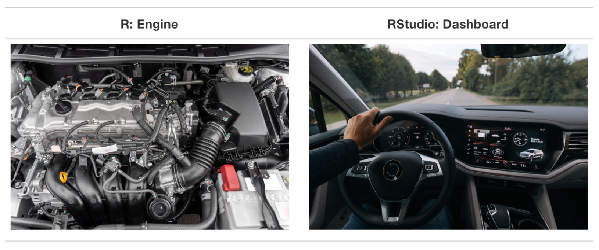

COMM 3710: Getting Started with R
1 Introduction
This is a guide for getting started and using R on Posit Cloud in COMM 3710: Introduction to Quantitative Communication Research in the Department of Communication at the University of Utah.
1.1 What is R?
“R is a language and environment for statistical computing and graphics.”1
R is a free software environment for computing and graphics from CRAN, the Comprehensive R Archive Network. You can always read more about R by visiting the homepage of the R Project for Statistical Computing but you are probably more interested in the answer to the following question:
What is R in the context of COMM 3710?
In this course, you will learn to use R for data analysis. In other words, R is the software that you will primarily use in COMM 3710 lab.
1.2 Why R?2
Increasingly, data are important components of decision-making. Whether you are looking at industry trends, generating financial statements and reports, analyzing market data, or creating visuals to communicate your work, you will need to know how to analyze data to efficiently, accurately, and professionally to develop reports and effectively communicate your findings.
R is a tool that can help you do all this and more. This course will help you become familiar with this powerful data analysis tool. Often, students ask why we use R instead of Microsoft Excel in this course.
Here are some reasons for using R over Excel.
1.2.1 Ease of Use
There is little doubt that Excel is much easier to use than R. Most of us already know many Excel basics and the learning curve is minimal compared to R. This is partly due to the point-and-click nature of Excel, allowing us to make simple charts and tables.
R, on the other hand, is a programming language. This means that the initial learning curve is, for most, likely to be steeper than that of Excel. However, with practice and time, R becomes easier quickly and you will soon realize that R is a powerful tool for analysis and generating visuals from data.
1.2.2 Replicating Analysis
Having to use the point-and-click interface, or the graphical user interface (GUI), is a distinct disadvantage of Excel. Because you cannot import or use scripts, which are a collection of commands, in Excel, you must rely on memory to replicate your analysis.
Tip
In Excel, you must rely on memory to replicate data analysis. In R, you can simply re-run your saved script.
R, on the other hand, is capable of reproducing analyses quickly and with different datasets. The commands for data analysis that you use in R can be saved as a script, which can then be run on multiple datasets. In other words, when we use R for data analysis, we do not have to “reinvent the (data analysis) wheel” as you would with Excel.
1.2.3 Visualization
For simple graphics, Excel (with its minimal learning curve) can suffice. However, it is cumbersome to create attractive and professional-quality tables and figures in Excel.
Visualization is where R excels (hah, see what I did there!). When datasets begin to get complicated or large, R is better equipped to handle them without making errors and can create impressive and easily customizable visual representations.
1.2.4 Still wondering why we use R?
If you are still wondering why we are using R instead of Microsoft Excel for data analysis in this course, here are some examples that help illustrate the utility of R over Excel.
1.3 R vs. RStudio vs. Posit Cloud
Figure 1.1 is a good illustration of the distinction between R and RStudio (Ismay and Kim 2021).
Throughout this course, you will be using R via RStudio or Posit Cloud. This means that you will need to have both R and RStudio installed on your computer. If you are using Posit Cloud, you will not need to install anything on your computer.
Tip
If you are using RStudio, you will need to install R and RStudio on your computer. If you are using Posit Cloud, you will not need to install anything on your computer.
New users often confuse R and RStudio. The analogy makes it clear that one cannot be functional without the other. Just like the dashboard of a car would not be functional without the engine and vice versa, RStudio and R are not functional without each other.
Remember that R is a programming language for statistical computing and graphics. RStudio, on the other hand, is an integrated development environment (IDE) that provides an interface and adds convenient features. Just like your dashboard has an odometer, navigation system, etc., that makes driving easier, using RStudio’s interface makes statistical computing using R much easier.
Part of this video by Andy Field describes the difference between R and RStudio. This video will also show you how to install R and RStudio, which are covered in Section 2.1.
Ismay, Chester, and Albert Y. Kim. 2021. Statistical Inference via Data Science. https://moderndive.com/.
https://www.r-project.org/about.html↩︎
Adapted from R vs. Excel: What’s the Difference?↩︎